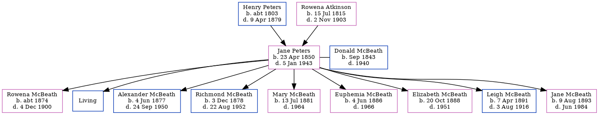

Jane Marion McBeath (née Peters) 1850 - 1943 [ Home ] | [ Calendar ] | [ Surnames Index ] | [ Family History ]The daughter of Henry Peters and Rowena Atkinson Jane Peters , the second cousin three-times-removed on the father's side of Nigel Horne , was born in Peters Mills, Rexton, Kent, New Brunswick, Canada on 23 Apr 18501,2,3 andhad 9 children with Donald McBeath (a farmer): Rowena Isabella , Henry P , Alexander Wathen , Richmond Noble , Mary Elizabeth Grace , Euphemia Alberta , Elizabeth Arletta , Leigh Melbourn and Jane Irene , along with 1 surviving child.
Throughout her life, she lived in Richibucto, Kent, New Brunswick, Canada in 18611 , in 18812 (the same place as her father had been living in 1861) and in 19114 (the same place as her mother had been living in 1861) which is where she died on 5 Jan 1943.
Parents Henry Warman was born c. 1803Rowena Noble Charlotte was born on 15 Jul 1815Children Rowena Isabella was born c. 1874Alexander Wathen was born on 4 Jun 1877Richmond Noble was born on 3 Dec 1878Mary Elizabeth Grace was born on 13 Jul 1881Euphemia Alberta was born on 4 Jun 1886Elizabeth Arletta was born on 20 Oct 1888Leigh Melbourn was born on 7 Apr 1891Jane Irene was born on 9 Aug 1893Citations 1861 Census of Canada Ancestry.com Operations Inc (Relation to Head of House: Daughter) 1881 Census of Canada Ancestry.com Operations Inc (Marital Status: Married) Canada Census 1861 - Findmypast Canada Census 1911 - Findmypast (was the wife of the head of the household) Media Canada Census 1911 - CAN/CENSUS/1911/01307387 Canada Census 1861 - CAN/CENSUS/1861/02668127 Family Tree Map
Generated by ged2site . Last updated on Feb 19, 2025